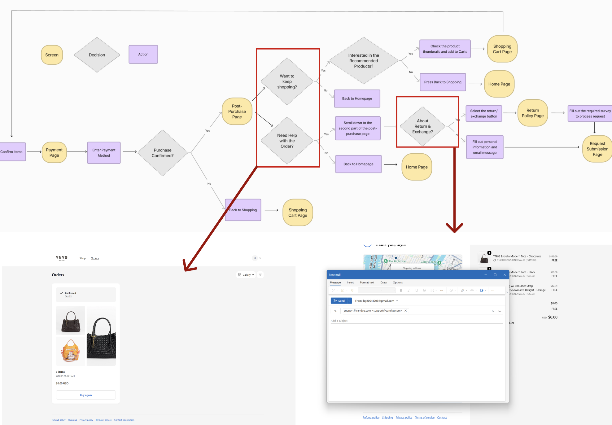
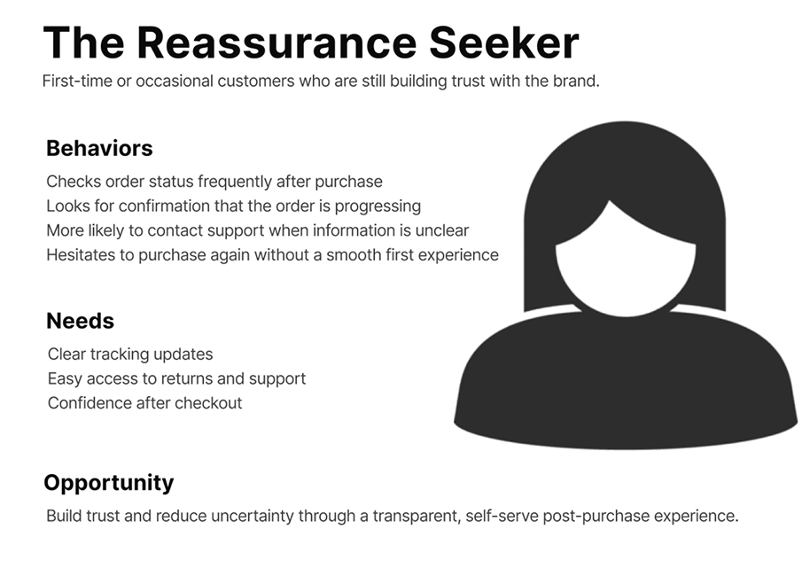
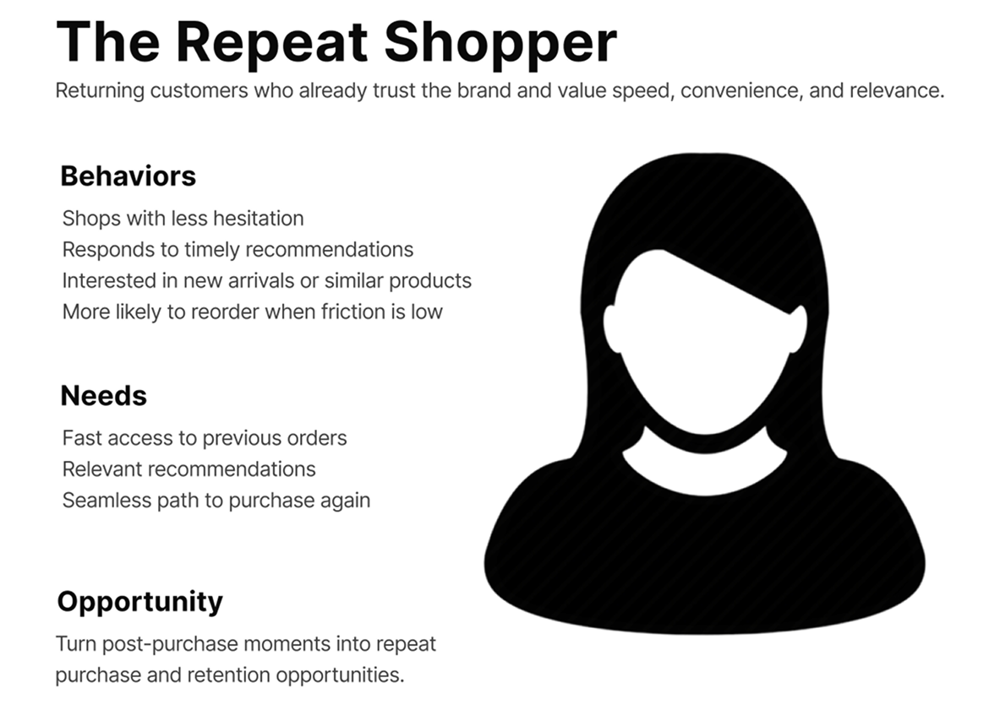
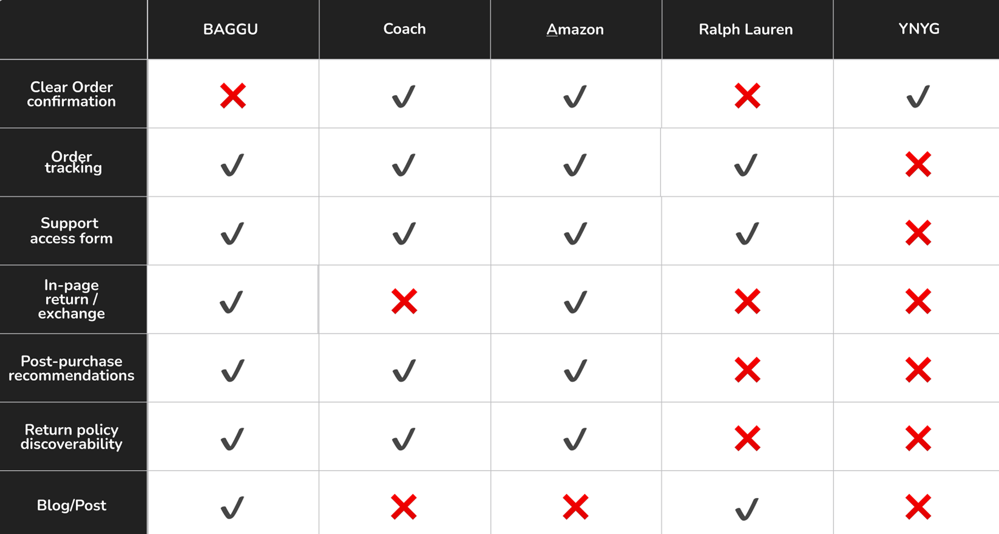
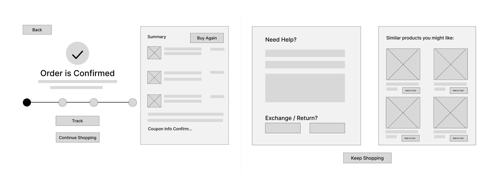
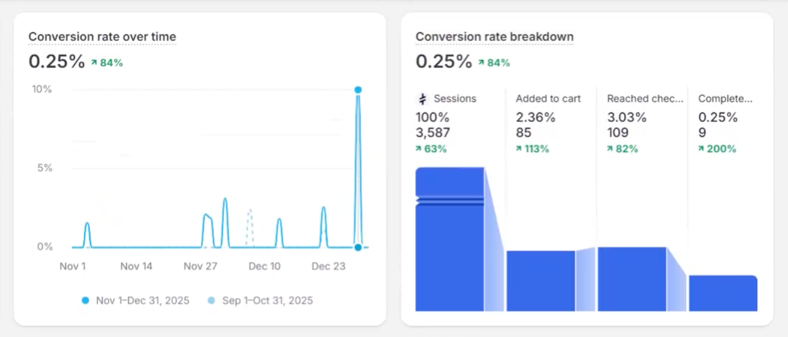
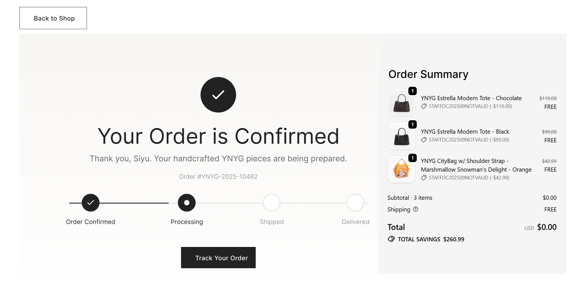
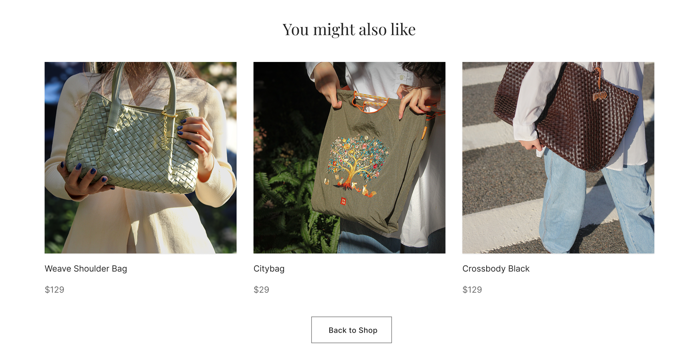
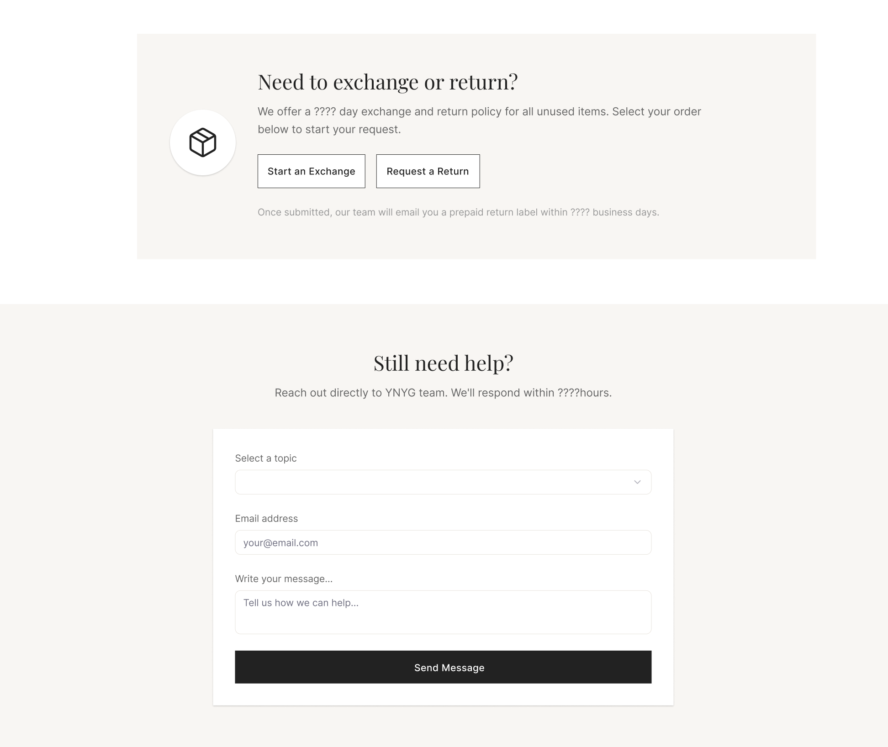

B2C · E-COMMERCE · PRODUCT STRATEGY
Optimizing Post-Purchase Engagement for YNYG
PROBLEM
Customers felt confused after checkout, especially around tracking and returns, reducing trust.
SOLUTION
A centralized post-purchase experience with tracking, support, and recommendations.
IMPACT
+32% Repeat Orders
-24% Support Emails
+18% Retention

The Challenge
Through 8+ customer interviews at pop-up events and observation of user behavior, I identified 3 key challenges:
- Lacked clear visibility into order status after checkout
- Return and support information was fragmented
- Felt loss of control once the purchase was completed
From a business perspective, the unclear post-purchase state created a risk of reduced trust, lower retention, and missed opportunities for continued engagement.

CUSTOMER NEED
Feel informed and supported after checkout with seamless access to tracking, returns, and relevant product recommendations.
BUSINESS NEED
Reduce repetitive inquiries, improve operational efficiency, and find opportunities for repeat purchases and retention.
Research & Insights
Through customer interviews and competitive analysis, I identified key opportunities to improve the post-purchase experience.
Customer Archetypes
Two recurring customer mindsets shaped the solution direction.


Competitive Analysis
I benchmarked 5 comparable brands and found that many offered stronger self-service tools, while YNYG lacked a centralized post-purchase hub.

Key Opportunities
Unified Post-Purchase Hub
Bring tracking, support, and recommendations into one destination.
Serve Different Customer Needs
Support reassurance for new customers and efficiency for returning customers.
Drive Repeat Engagement
Use post-purchase moments to encourage future purchases.
Collaborating with Stakeholders
Business Alignment
STAKEHOLDER
“Would easier returns increase returns?”
MY RESPONSE
I reframed the discussion around long-term retention: transparent returns can build trust and encourage repeat purchases.
PM Collaboration
PM
“How do we know which post-purchase features users actually need?”
MY RESPONSE
I used AI tools like Claude and connected Lovable to Shopify to rapidly prototype ideas, helping PMs visualize concepts, gather early feedback, and align on priorities before development.
Validation & Iterations
I validated the experience through internal feedback, customer observations, and ongoing Shopify performance signals.
Early Concept Testing
- Users valued everything in one place
- Tracking was the highest-priority feature
- Recommendations needed to feel helpful rather than overwhelming

Ongoing Performance Review
After launch iterations, our team reviewed Shopify analytics to monitor engagement trends and identify future opportunities.
- Conversion rate ↑ 84%
- Added to cart ↑ 113%
- Completed purchase ↑ 200%
These broader site trends helped inform continued investment in customer experience improvements.

Final Design & Implementation
01
Status Tracking & Summary
Centralized order confirmation and tracking to reduce uncertainty and build confidence immediately after checkout.

02
Re-engagement & Discovery
Extended the post-purchase journey with relevant products and editorial content, encouraging continued discovery beyond checkout.


03
In-Page Return & Support
Reduced the need to search or contact external customer service via email, lowering cognitive load and building user trust.

Impact
The redesigned post-purchase experience created value for both customers and the business.
“Your attention to detail really strengthened the final experience.”
— PM
“I finally feel reassured after placing my order!”
— Customer Feedback
Reflection
What I Learned
- Post-purchase UX is more than a support layer. It can reduce operational burden, strengthen trust, and unlock long-term customer value.
- Balance ideal experiences with real platform constraints, evolving priorities, and stakeholder goals.
Next Steps
- Refine product recommendations based on clicks, repeat purchases, and seasonal shopping trends.
- Use Shopify analytics to identify where users drop off, what features are most used, and where further friction remains.